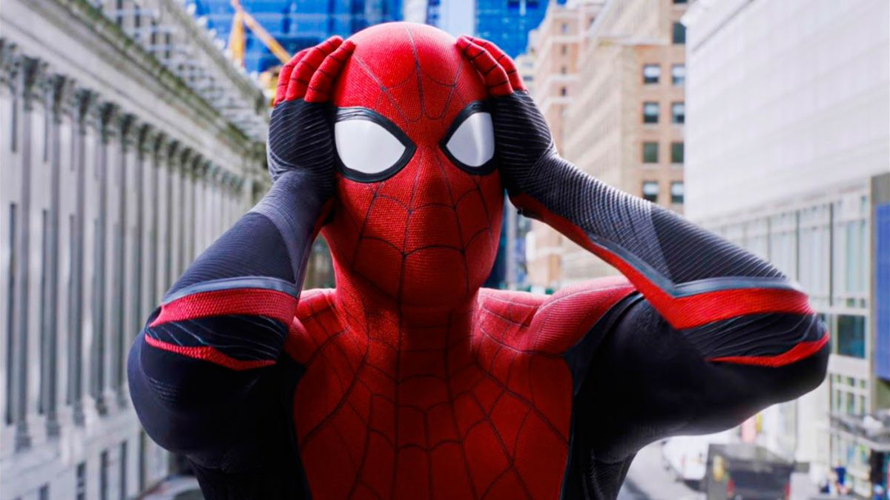

Destacadas
Spider-Man: No Way Home es la tercera película más taquillera en la historia de EE.UU.

Una vez más Spider-Man: No Way Home (Sin camino a casa) y su récord confirman que se trata de uno de los superhéroes más exitosos de la historia del cine. En tres meses, el film superó los 760,5 millones de dólares de Avatar, lo que la convirtió en la tercera película más taquillera de la historia de Estados Unidos. Luego de dos meses de su estreno, todavía rompe récords de taquilla.